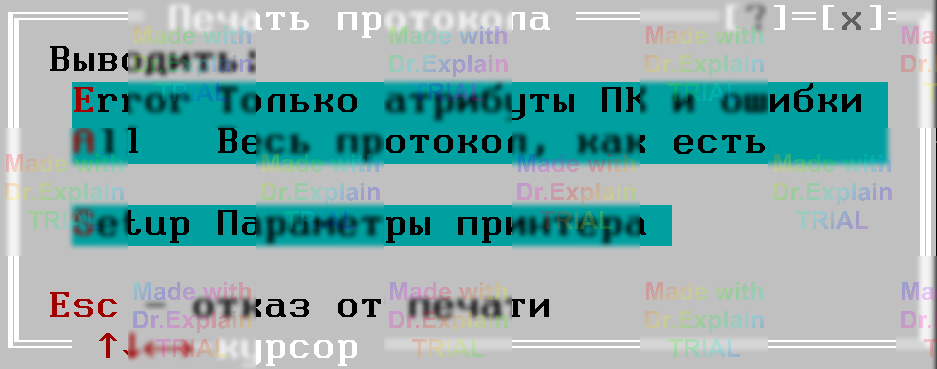

2.1.9 Команда Run / Print — печать протокола выполнения
Горячая клавиша: Alt‑P
Назначение
Выводит протокол выполнения программы контроля (ПК) на принтер. Перед печатью появляется диалог «Печать протокола выполнения» (см. рис. 1), где выбираются объём выводимых данных и параметры печати.
Что можно распечатать
-
Только атрибуты ПК и ошибки
-
сообщения
$DOC, описывающие ПК (наименование, атрибуты, обозначение и наименование ОК, резюме), а также результаты измерений команд с ключом Д; -
сообщения об ошибках/сбоях и их локализации
(
?ERR,$LOC,?LOC,?MOD,?FAT,?JMP).
-
сообщения
-
Весь протокол, как есть
Печатаются все сообщения, отображаемые в текущий момент в окне «Протокол выполнения».
Меню «Параметры вывода на печать»
Позволяет переустановить режимы принтера (качество, тип бумаги, ширина и т. д.). Это удобно для экономии бумаги и ускорения печати, особенно при использовании матричных принтеров.
Рекомендуется при первом выводе протокола убедиться в правильности выбранного принтера и его настроек.
